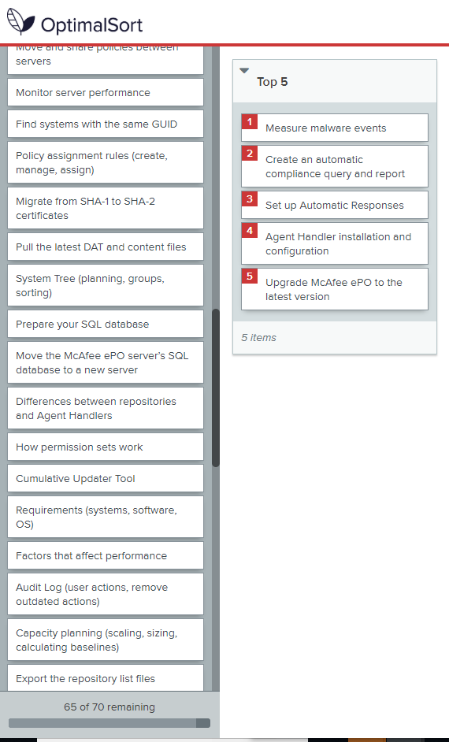

The Challenge
One of the challenges content authors face is knowing what tasks and content resonate with our customers. For our McAfee ePolicy Orchestrator (McAfee ePO) content, we wanted to find out what information was most valuable to our customers. We already had the usual infrormation about our website: page-views, bounce-rates, time-on-page, but we wanted to know if that information accurately reflected our customer’s needs and wants, and if there were any content gaps.
The Response
In order to find out what those customer needs were, I partnered with Information Developer Kelli Greenwald to implement Gerry McGovern’s Top Tasks approach.
Top tasks are those activities and outcomes that resonate the most with our customers. Too often, the top tasks that are important within an organization are not the same top tasks that are most important to our customers.
Kelli and I identified the internal stakeholders that could help us determine what the McAfee ePO top tasks were. We invited those stakeholders to an hour long brainstorming session. Here, the team-buiding Kelli had done in her role as an Information Developer resulted in over thirty product engineers, artchitect, and product managers showing up for the meeting. We were able to quickly generate an extensive list of product tasks.
We took that list and refined it into a final list of around seventy possible top-tasks. The goal here is to intentionally overwhelm the customer. Per Gerry McGovern, this overwhelm results in survey respondents replying instinctively.
We created the survey in Optimal Workshop and reviewed and tested it internally. Kelli arranged to walk through the survey with one of our customers, and we were able to make sure that the survey could be completed in a timely fashion.

Once we were confident in our survey, we partnered with our SEs and other customer-facing stakeholders to get the survey out to McAfee ePO administrators. This hands-on approach enabled us to avoid bombarding our customers with yet another survey. We achieved a 70% completion rate and a hundred completed surveys. Later attempts to encourage survey responses without that personal touch resulted in the usual abysmal survey returns.
The Benefits
Our top tasks reasearch revealed a disconnect between the content our customers were asking for, and the content we were providing or the content that they could find.
The top five tasks for McAfee ePO were:
- Factors that affect performance
- Troubleshooting installation
- Scheduling product and update deployments
- Finding systems that needed a McAfee Agent
- Maintaining SQL databases
But the most-viewed web articles for McAfee ePO were:
- System tree information
- Repository information
- System requirements
- McAfee ePO overview
- Agent Handler installation
Our overview information was obscuring the content our customers cared about most.
Armed with this knowledge, we could start to effect meaningful changes to improve the customer information experience and move from our content from product-centric to customer-centric. Knowing our customers’ top tasks are, we were able to prioritize our work and start re-organizing our content to align with those customer needs.